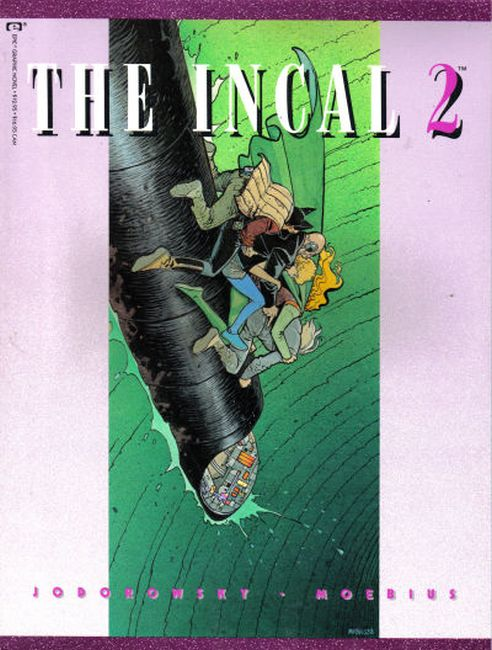
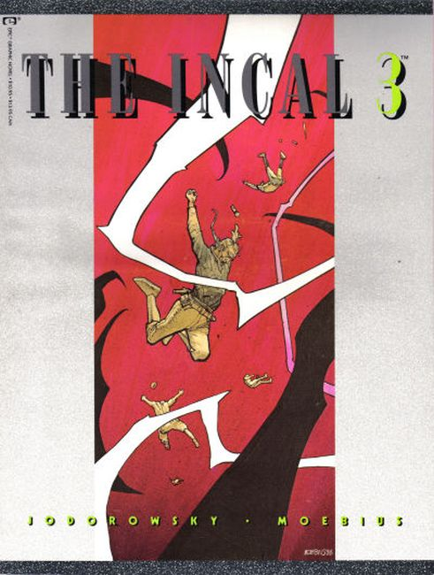
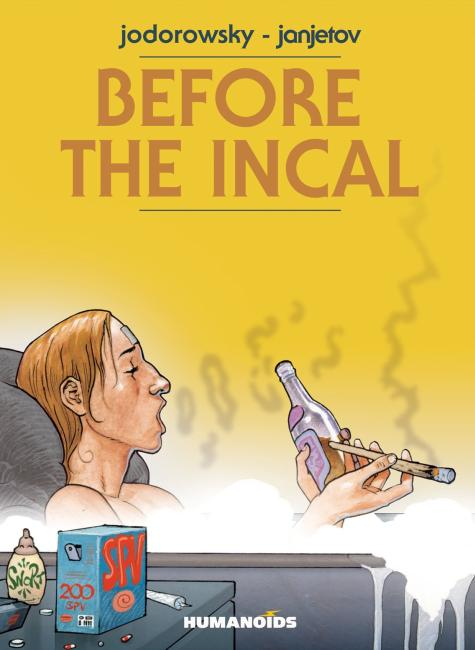
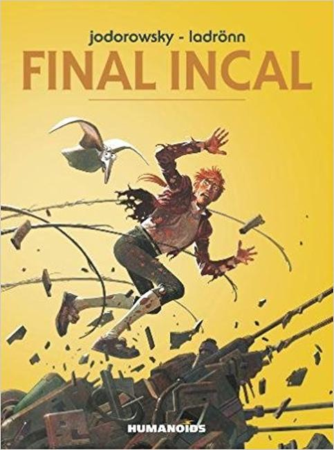

The Incal is a French graphic novel series written by Alejandro Jodorowsky and originally illustrated by Jean Giraud. The Incal, with first pages originally released as Une aventure de John Difool ("A John Difool Adventure") in Métal hurlant and published by Les Humanoïdes Associés, introduced Jodorowsky's "Jodoverse" (or "Metabarons Universe"), a fictional universe in which his science fiction comics take place.
It is an epic space opera blending fantastical intergalactic voyage, science, technology, political intrigues, conspiracies, messianism, mysticism, poetry, debauchery, love stories, and satire. The Incal includes and expands the concepts and artwork from the abandoned film project Dune directed by Jodorowksy and designed by Giraud from the early 1970s.
Originally published in instalments between 1980 and 1988 in the French magazine Métal Hurlant, and followed by Before the Incal (1988–1995, with Zoran Janjetov), After the Incal (2000, with Jean Giraud), and Final Incal (2008–2014, with José Ladrönn) has been described as a contender for "the best comic book" in the medium's history. From it came spin-off series Metabarons, The Technopriests, and Mégalex.

Welcome to the Jodoverse! A place beyond imagination. When a terran is given a n object of great power many factions from around the galaxy come looking for it. Get ready for a space opera unlike anything else you've seen before.
The story is set in the dystopian capital city of an insignificant planet in a human-dominated galactic empire, wherein the Bergs, aliens who resemble featherless birds and reside in a neighboring galaxy, make up another power block. It starts in medias res with DiFool tossed off by a masked group from the Suicide Alley down to the great acid lake, luckily saved by a police cruiser.

During the questioning he denies that he received the Light Incal, a crystal of enormous and infinite powers (it guides and protects those who believe in it) from a dying Berg. The Incal is then sought by many factions: the Bergs; the corrupt government of the great pit-city; the rebel group Amok (led by Tanatah); and the Church of Industrial Saints, commonly referred to as the Techno-Technos or the Technopriests, a sinister technocratic cult which worships the Dark Incal.
Animah (an allusion to anima), the keeper of the Light Incal, seeks it as well. During the journey DiFool and Deepo are joined by Animah, The Metabaron, Sunmoon, Tanatah (sister of Animah) and Kill Wolfhead, with a task of saving the universe from the forces of the Dark Incal, and the Technopriests manufacture and launch into outer space the sun-eating Dark Egg. As the darkness is overcome, DiFool is brought before Orh, the fatherlike divinity, who tells him he must remember what he witnessed. As DiFool falls away, he finds himself where he was at the beginning, falling down the shaft.

Before the Incal
The story is a considerably more straightforward noir tale of boundless urban corruption with the relative absence of spiritualistic elements, which dips deeper into exploring the urban fabric of the world of The Incal. The story follows young DiFool living in demimonde. He soon finds that his prostitute mother devoted herself to growing amorine, a drug that restores the ability to love.
His father, Olivier DiFool, breaks the law in wearing a fake halo that is the mark of an aristo. Justice is harsh for such transgressions of class — a legal clause "allows the condemned man to choose between a tablet at the morgue-wall, where he'll sleep away his thirty-year-and-one-day term", or "remodeling", which means having his entire memory wiped. His father chooses remodeling. DiFool soon begins to investigate the mystery of disappearance of the children of prostitutes, something he shouldn't find out.

Final Incal The story from the unfinished After the Incal was rewritten to provide a separate narrative for this volume. The story starts after The Incal climax, in which John DiFool encountered a flowing-bearded divine being named Orh, witnessing a universe-shaking event, hurtling towards certain death in the acid lake. DiFool forgets about the cosmic encounter, and recovers his memory as the universe faces a threat of a metallic virus.
The Prezident was cloned in a metallic body, equipped with both chemical and brutal weapons, but also an altered mind — operating under the influence of the "destroyer of all living things", the Bentacodon (equivalent to The Incal's Black Egg). He unleashes a destructive organic virus called the Biophage 13-X with the purpose of forcing the population to abandon their natural bodies in favor of robotic ones.
The only way to counteract is to reunite John DiFool with his true love, Luz de Garra (from Before the Incal), and the Elohim (a force of goodness) makes four John DiFools from different realities to encounter each other on a quest to find her. The egos of the allegedly evolved guru DiFool and the super-evolved "angelic" DiFool are ridiculed, and the least enlightened DiFool, the ugliest and most craven, is selected to save the universe. In the end, the cosmic humanity manages to become one collective consciousness, as true love saves it from turning into a collection of unfeeling metallic beings.